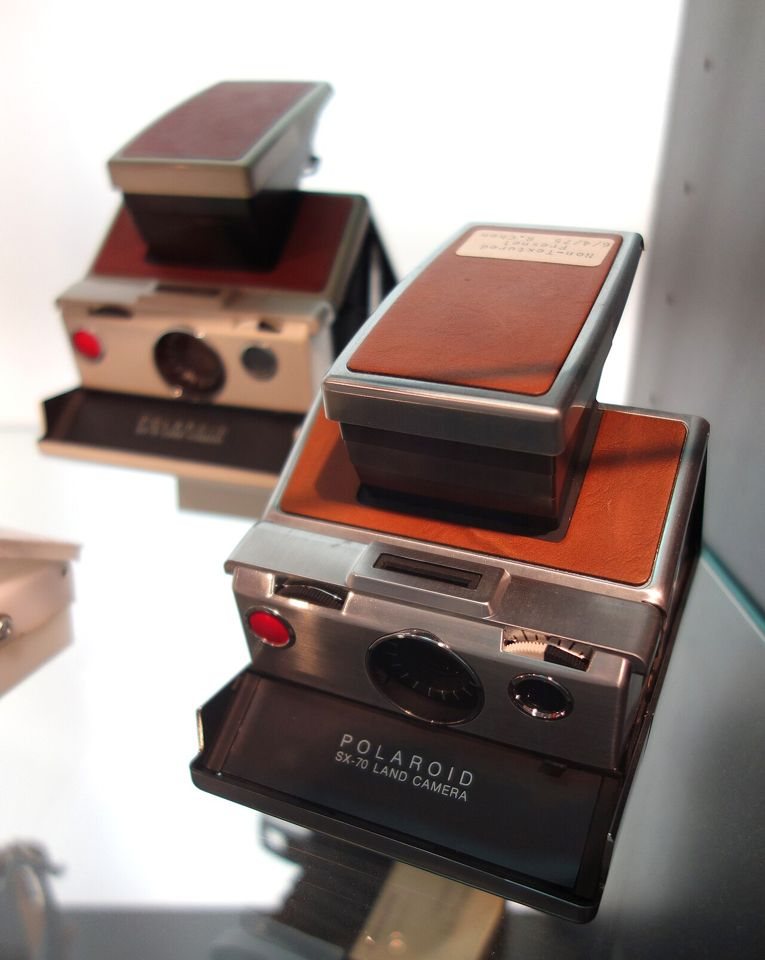
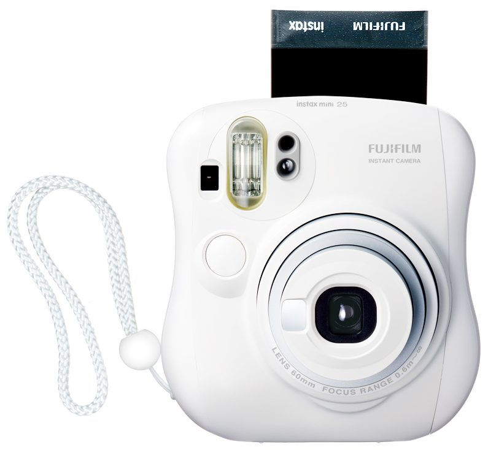
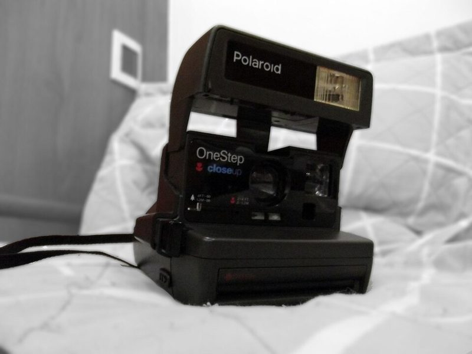

인스턴트 Instant · 인스턴트
찍으면 바로 사진이 나옵니다. 현상소가 필요 없습니다.



어떻게 찍히나요
필름 한 장 안에 현상액 주머니가 들어 있습니다. 찍고 나면 롤러가 필름을 밀어내며 주머니를 터뜨려 약품을 고르게 펴 주고, 몇 분 안에 사진이 떠오릅니다. 네거티브가 없어 세상에 그 한 장뿐입니다.
이런 분께 추천
- 찍은 자리에서 바로 나눠 주고 싶은 분
- 모임·여행 기록용 카메라를 찾는 분
- 현상소 이용이 번거로운 분
좋은 점과 아쉬운 점
- 좋은 점
- 세상에 단 한 장
- 아쉬운 점
- 장당 비용이 높고 온도에 민감
대표 기종
Polaroid SX-70 · 600 · i-Type · Instax mini · wide · square
대략적인 가격
10만 ~ 50만 원
중고로 살 때 확인할 것
- 필름 규격 확인(Instax mini / wide / square, Polaroid 600 / i-Type / SX-70은 서로 호환 안 됨)
- 중고 Polaroid는 롤러에 이물질이 없는지 확인
- 추운 날에는 현상 중인 사진을 품에 넣어 따뜻하게